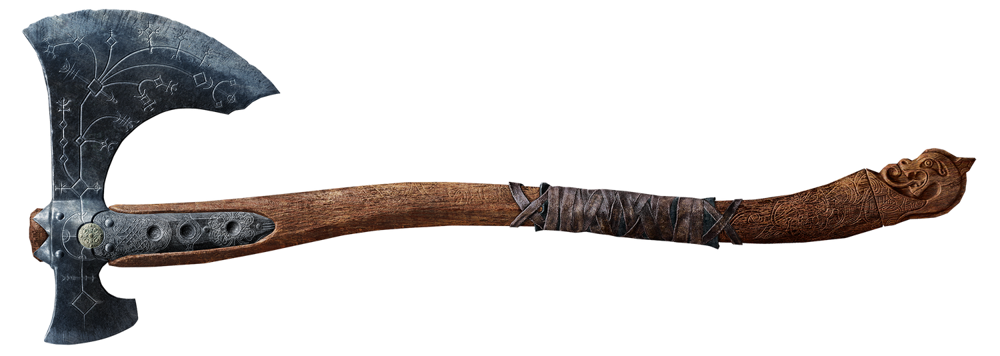
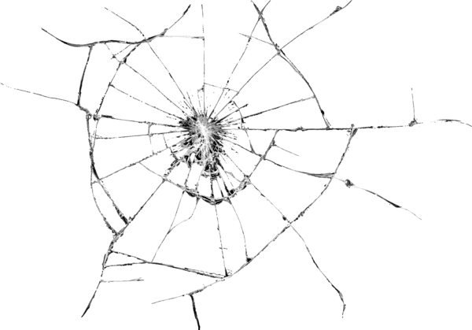
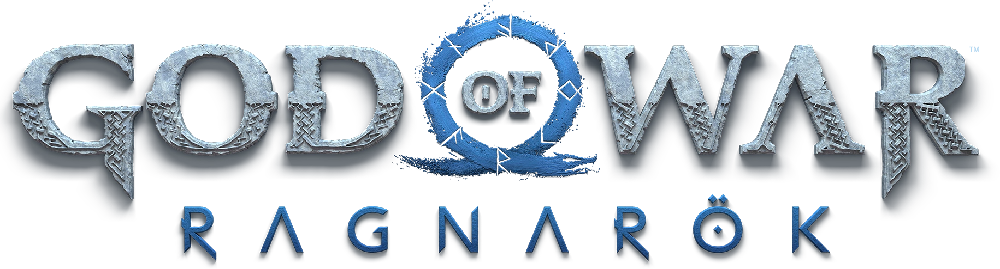
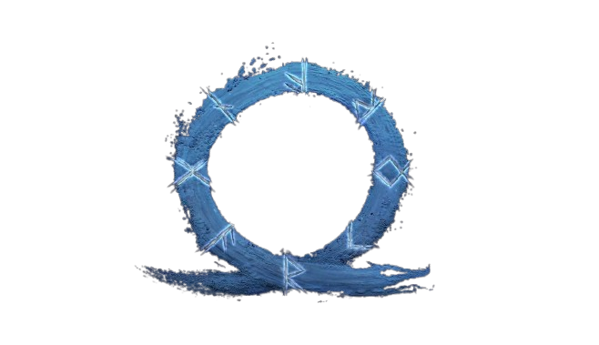

Junte-se à maior comunidade gamer. Complete missões exclusivas, desbloqueie conquistas e compartilhe suas vitórias.

Colecione todos os outros troféus de God of War Ragnarök.
Inicie a primeira caçada (Conquista de História).
Crie todos os conjuntos de armadura para Kratos.
Conclua 10 Favores (Missões Secundárias).
Derrote um Berserker (Mini-Chefe).
Complete o jogo na dificuldade "Não Dificulte" ou superior.
Encontre a metade dos Artefatos de Svartalfheim.
Aprimore uma peça de armadura até o nível 9.
Complete a Prova Final de Muspelheim.
Abra seu primeiro Baú Nornir.
O primeiro confronto em Midgard.
Em Andamento (50%)Viagem inicial para Svartalfheim.
ConcluídaO Confronto Final dos Nove Reinos.
PendenteConfronto com a bruxa. (Capítulo 5)
ConcluídaAjude Brok na busca por materiais.
Em Andamento (2/4)Investigue a Prisão. (Pós-jogo)
Pendente